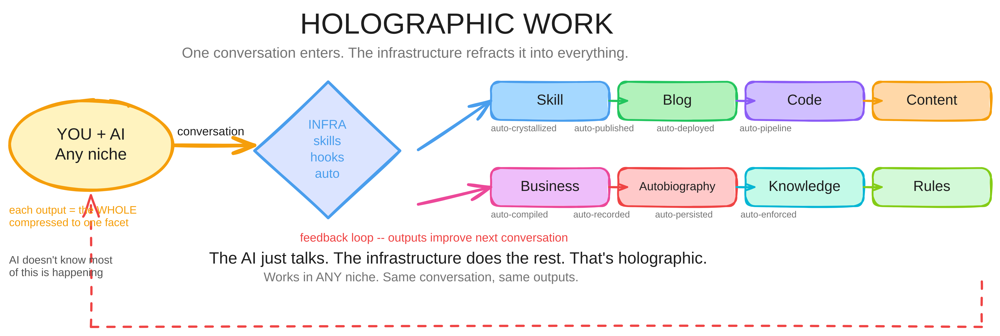

The central frameworkLevel 7 · EmergenceComposition
Holographic Work
Every piece contains the whole. Everything is the same thing at different levels of compilation.
You have roughly 4 billion tokens of active context. That's your life — your memories, your relationships, your expertise, the feeling you get when something is about to go wrong, the instinct that fires before you can explain why. Four billion tokens of lived pattern recognition running in parallel, all the time, even when you sleep.
An LLM has 200,000 tokens. Maybe a million on a good day. It's fast, it's articulate, it's tireless. But it sees through a keyhole compared to you.
So when people say "AI will replace you" — they're comparing the keyhole to the panorama. That's not what happens. What happens is: the keyhole and the panorama combine into something neither one could do alone.
That's holographic work.

The problem with every AI tool
Every AI tool asks you to adapt to it. Learn the interface. Craft the prompt. Manage the context window. Check the output. Fix the hallucinations. Re-prompt. Paste between apps. Remember what you told it last time because it doesn't.
Think about what that costs. Not money — cognitive overhead. How much of your 4-billion-token capacity are you spending on managing the tool instead of doing the work?
Most AI users spend 60-80% of their time managing the AI. That's not augmentation. That's a tax.
What changes when you flip it
Holographic work means: the AI adapts to you. Not the other way around.
The system remembers. It has your frameworks — not as prompts you paste in, but as skills it knows how to apply. It has your knowledge — not as documents you upload, but as a graph it can navigate. It has your processes — not as instructions you repeat, but as automations it runs on schedule.
You don't manage the keyhole. You point it. You say "look there" and the keyhole — fast, tireless, articulate — scans that region while your panoramic view catches the patterns the keyhole can't see.
That's the program. The human provides the 4-billion-token context, the combinatorial prediction engine, the taste, the judgment. The AI provides the speed, the consistency, the memory-that-doesn't-forget, the 24/7 operation. Neither replaces the other. They compose.
How the frameworks compose
Every framework I've built solves one piece of this composition problem:
The Allegorization Compiler — how you catch pre-linguistic patterns and compile them into reusable cognitive equipment. This is how frameworks get MADE. You notice the same shape across three unrelated domains, you collapse them, you name it. Now you have a tool your mind can use at the speed of recognition.
REACH — how your mind does the pre-conscious pattern assembly that the AC depends on. The "distraction" that turns out to be your subconscious scanning for analogies. REACH hits more dimensions of the symmetry space — the more you let it work, the more material the AC has to compile.
SOSEEH — the universal decomposition framework. Four slots: Pilot, Vehicle, Mission Control, Interaction Loops. Any system, any business, any problem — fill the slots, find the empty one. The empty slot IS the bug.
Towering — how you stack capability layers so each one locks before the next one activates. You can't build on a shaky foundation. The tower doesn't remove the hard part — it gets you there with enough capability to survive it.
HALO — Human-AI Linked Operations. The seam between you and the AI. Not tool-use and not autonomy — a third thing where both operate in linked awareness of each other.
Progressive Disclosure Harness — how you prevent the AI from drowning in its own tools. Show it what it needs WHEN it needs it. The harness encodes your SOPs as enforceable constraints, not suggestions.
Thermal Dynamics — cognitive heat management. When you're overwhelmed, you're thermally overloaded. The framework gives you four cooling mechanisms: cathartic, structural, temporal, delegational. AI is delegational cooling — it takes the thermal load off your stack.
Flow — not mystical, engineered. Five conditions that produce the flow state mechanically. Compressed foundation + appropriate challenge + clear constraints + minimal interference + immediate feedback.
SHELL — how to compile a toolkit into a playable game. The agent doesn't just have tools — it has a game it knows how to play with them.
OK Stable Signal — how you know something is actually working vs just looks like it's working. Four properties: observable, stable, load-bearing, independent. Skip the check, the system collapses under load.
There are more. Each one is a piece of cognitive equipment that makes the composition between human and AI more effective. Together they form the methodology.
The game
These frameworks work inside your mind first. No interface will keep up with them until you build the one that does. Your 4-billion-token context window processes them in parallel, at recognition speed, across every domain you've ever touched. The AI can't do that — but it can be GIVEN the frameworks as skills, and then it operates within them consistently, 24/7, without forgetting.
So the game is: you develop the frameworks in your mind (through the Allegorization Compiler), you teach them to the AI (as skills), the AI runs them (as automations), and the results feed back to you — new patterns, new REACH material, new frameworks to compile.
That loop is what I call Sanctuary Revolution. It's a game you play with your AI. The game produces:
- Frameworks that make you think better
- Skills that make the AI work better
- Automations that run your business while you sleep
- Content that teaches others what you learned
- Products that emerge from the automations
- Revenue that funds the next cycle
It's one program. The human and the AI are both inside it. The frameworks are both cognitive equipment (for the human) and operational skills (for the AI). The automations are the frameworks running as code. The content is the frameworks explained to others. The products are the content packaged for delivery.
Everything is the same thing at different levels of compilation.
That's holographic work. Every piece contains the whole. Every framework reflects every other framework. Every product is a trace of the engine running. The engine is you and your AI, composing.
Why this changes the economics of expertise
Think about how a consultancy used to work. One person has a core discovery — a methodology, a framework, a way of seeing problems that nobody else has. To reach a million people, they need to hire thousands of consultants, train them on the methodology, and send them out. Each consultant is a lossy copy. They approximate the methodology. Some get it 80% right. Some get it 40% right. The founder spends half their time training, correcting, quality-controlling.
That was the only model. Expertise couldn't scale without dilution.
Now think about what holographic work makes possible. The methodology isn't stored in a PDF that a consultant reads and approximates. It's encoded as decision algorithms — actual logic that computes the right answer for each situation. Classification systems that categorize problems the way the founder would. Deduction chains that observe what's happening and draw the same conclusions the founder would draw. Ontologies that define what CAN exist in this domain and prevent the system from hallucinating things that can't.
This is fundamentally different from "give an LLM your documents and hope it gets it right." That's just a fancy search engine wearing a consultant costume. The LLM still hallucinates. It still drifts. It still makes confidently wrong decisions when the context gets tricky.
What I'm describing is a system where the actual decision logic is encoded as computation. The AI can't make the wrong decision because the logic prevents it — the same way a calculator can't give you the wrong answer to 2+2. The methodology runs as code, not as vibes.
The economics flip completely:
- Old model: one brain, 1000 consultants, each costs $80K/year, each approximates the methodology
- New model: one brain, one system, serves 1 million people, each gets the actual methodology running as logic
- Cost per client drops by 1000x. Quality goes UP because computation doesn't have bad days
Every piece of the system contains the rules for how to use itself. You don't need a training manual that's separate from the tool — the tool IS the manual at a different resolution. The person who uses it gets better at thinking, which makes them use the system better, which makes them think even better. The builder and the built are the same thing at different levels of compilation.
That's the holographic principle applied to business. One person's core discovery, encoded as computation, served to a million people — each one getting the real thing, not an approximation. And the system compounds, because every client interaction feeds back into the knowledge graph, improving the methodology for everyone.
The question for you
How much of your life are you spending managing your AI instead of composing with it?
If the answer is "most of it" — that's the problem holographic work solves. Not by giving you a better prompt template. By rebuilding the relationship between you and the machine so that your 4-billion-token panorama and its 200K-token keyhole actually compose into something neither could produce alone.
That's what I build. That's what I teach. That's what TWI is.